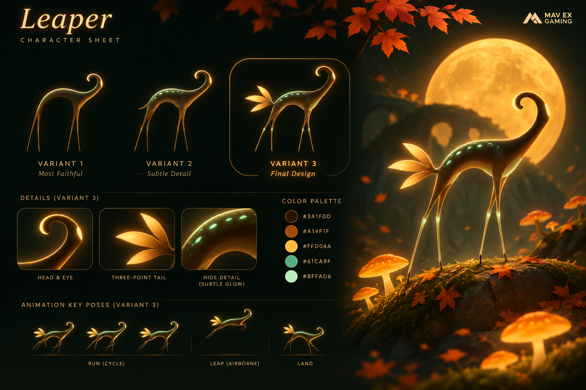

Leaper
Mav Ex Gaming · Co-Founder & Director · 2026 · In development
A portrait-mode mobile game where a small alien deer leaps across giant mushrooms in a glowing forest. I direct the project end to end, with AI tools as the production team: Claude handles engineering and ChatGPT handles visual development.
The challenge
On the studio's first game, visuals changed after coding had started, which caused costly rework. For Leaper I needed a process that kept a small, AI-driven team building the right thing the first time.
What I did
- Set a design-first rule: a visual bible covering the world, creature, environments and phone mockups had to be approved before any code was written.
- Gave each AI tool a clear role, and kept every asset in one shared folder structure as the single source of truth.
- Ran short build-and-test cycles with Android builds tested on a real device, and turned what I saw into prioritized fixes.
- Focused on how the game feels to play: a countdown after respawning and wider landing platforms to cut down on unfair-feeling failures, plus rewarded-ad respawns for monetization.
Result: Got from an approved visual bible to a playable Android build within days. A Google Play release is planned.